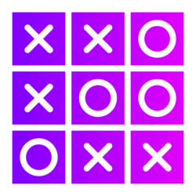

The origin of Tic Tac Toe game
Games played on three-in-a-row boards can be traced back to ancient Egypt, where such game boards have been found on roofing tiles dating from around 1300 BC.
An early variation of tic-tac-toe was played in the Roman Empire, around the first century BC. It was called terni lapilli (three pebbles at a time) and instead of having any number of pieces, each player had only three; thus, they had to move them around to empty spaces to keep playing.
The game's grid markings have been found chalked all over Rome. Another closely related ancient game is three men's morris which is also played on a simple grid and requires three pieces in a row to finish, and Picaria, a game of the Puebloans.
The strategy to playing the game
The best way for "X" player is to start in middle. In each ☐, the shaded red X denotes the optimal move, and the location of O's next move gives the next sub grid to examine.
Note that only two sequences of moves by O (both starting with the centre, top-right, left-mid) lead to a draw, with the remaining sequences leading to wins from X.
Optimal strategy for player O. Player O can only force a win or draw by playing in the centre first.
How to win or draw!
A player can play a perfect game of tic-tac-toe (to win or at least draw) if, each time it is their turn to play, they choose the first available move from the following list, as used in Newell and Simon's 1972 tic-tac-toeprogram.
Tips to follow:
- Win: If the player has two in a row, they can place a third to get three in a row.
- Block: If the opponent has two in a row, the player must play the third themselves to block the opponent.
- Fork: Cause a scenario where the player has two ways to win (two non-blocked lines of 2).
- Blocking an opponent's fork: If there is only one possible fork for the opponent, the player should block it.
- Centre: A player marks the centre. (If it is the first move of the game, playing a corner move gives the second player more opportunities to make a mistake and may therefore be the better choice; however, it makes no difference between perfect players.)
The first player, who shall be designated "X", has three possible strategically distinct positions to mark during the first turn.